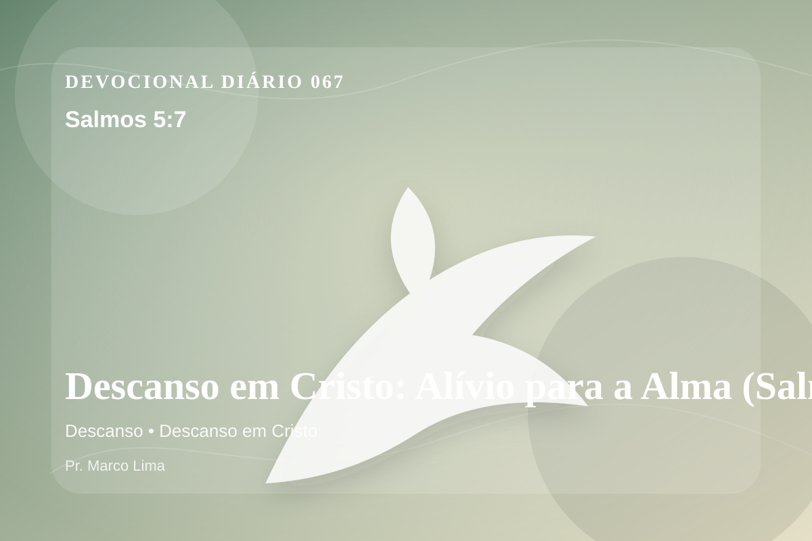

Descanso em Cristo: Alívio para a Alma (Salmos 5:7)
Mas eu, pela grandeza de tua bondade, entrarei em tua casa; adorarei inclinado para o templo de tua santidade em temor a ti.
Pensamento
Nesta nova leitura da mesma passagem, observe como Deus forma fidelidade em meio à pressão. Este devocional começa com uma pergunta simples: que área da sua vida precisa ser iluminada por Salmos 5:7 hoje?
Salmos 5:7 chama o coração a ouvir Deus com reverência e responder com fé prática. A Palavra não foi dada para enfeitar pensamentos religiosos, mas para conduzir pessoas reais ao Senhor.
O tema de descanso precisa ser recebido com simplicidade e seriedade. O ponto central não é apenas saber mais, mas viver de modo mais rendido. O descanso prometido por Deus não é fuga da responsabilidade, mas alívio para a alma que deixa de tentar vencer pela própria força. Em Cristo, o coração encontra descanso porque a graça substitui o peso do merecimento.
Examine se existe orgulho, comparação, medo, culpa escondida ou autossuficiência impedindo sua resposta ao Senhor. A graça não nos humilha para destruir; ela nos quebra para reconstruir em Cristo.
Arrependimento não é apenas sentir peso na consciência; é voltar-se para Deus, abandonar o caminho que entristece o Senhor e confiar que a graça de Cristo é suficiente para perdoar e transformar.
Este é o evangelho que sustenta toda aplicação: Jesus Cristo morreu pelos pecadores, ressuscitou em vitória e chama cada pessoa a responder com fé, arrependimento e uma vida rendida ao Seu senhorio.
Cristo não veio apenas melhorar comportamentos, mas salvar pessoas. Na cruz, Ele trata a culpa; na ressurreição, Ele abre caminho para uma nova vida.
Leve esta Palavra para o ponto mais concreto do seu dia. O fruto da meditação aparecerá quando Cristo governar uma reação, uma prioridade ou uma escolha.
Para Praticar Hoje
- Leia Salmos 5:7 lentamente e destaque uma palavra ou expressão central do texto.
- Confesse a Deus um pecado, resistência ou frieza espiritual que esta Palavra revelou.
- Declare sua fé em Jesus Cristo e pratique hoje uma atitude concreta de arrependimento e obediência.
Oração
Pai, a exaustão me lembra de que não fui feito para carregar tudo sozinho. Salmos 5:7 apresenta Jesus como o Bom Pastor que faz descansar as ovelhas cansadas. Ensina-me a render o peso. Aproxima meu coração de Ti hoje.
{kind=link}